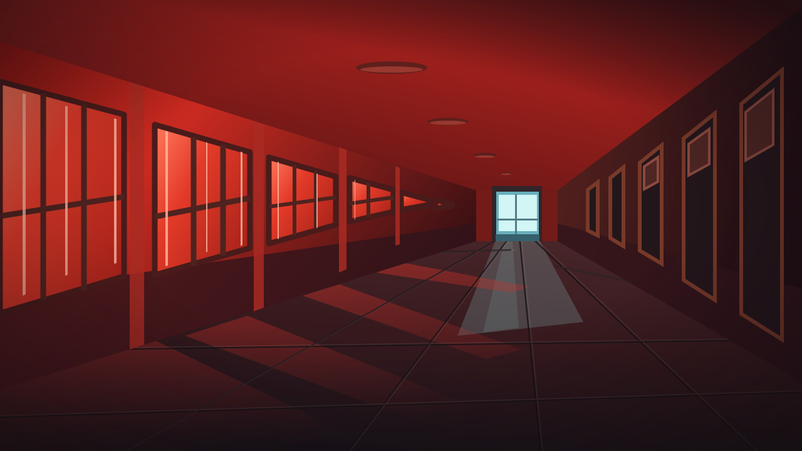
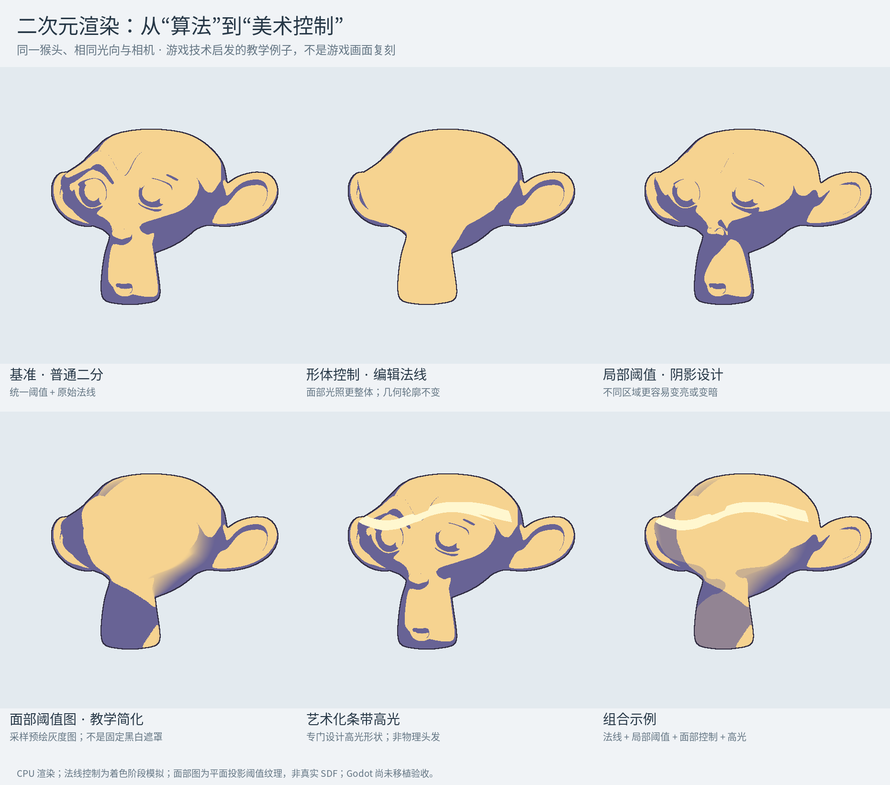
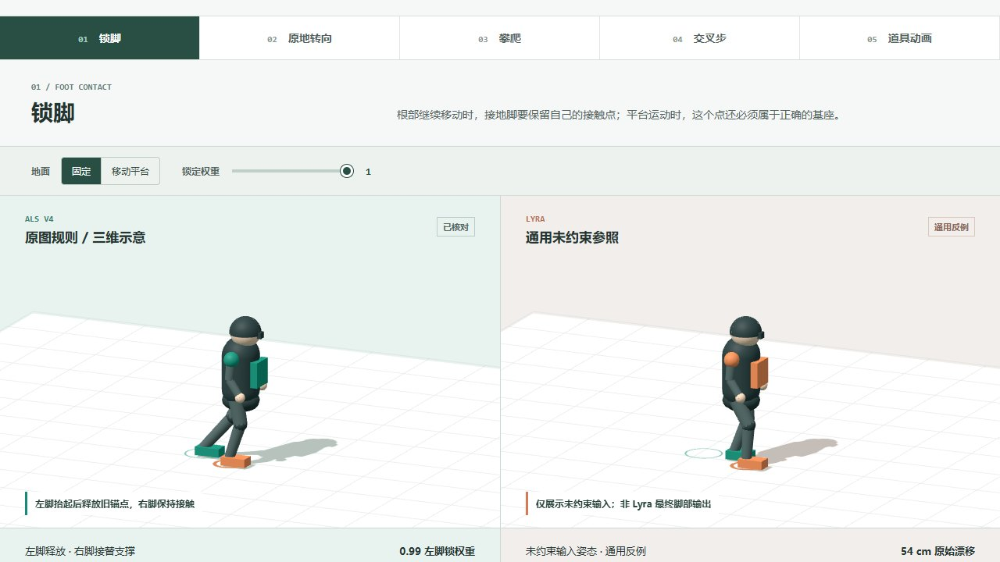
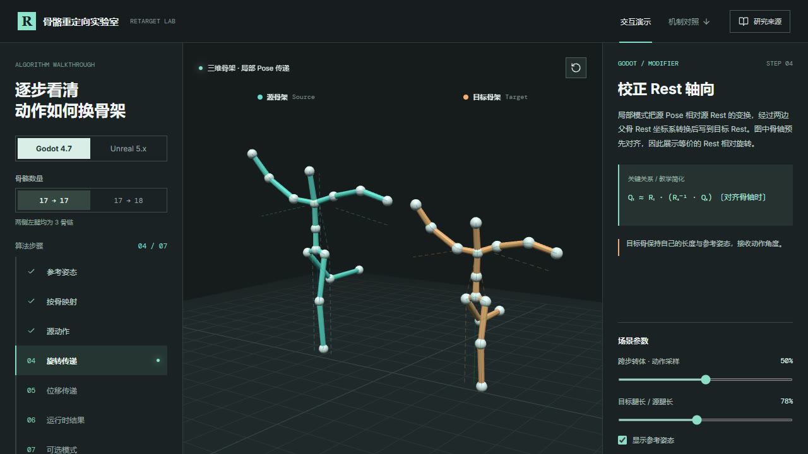
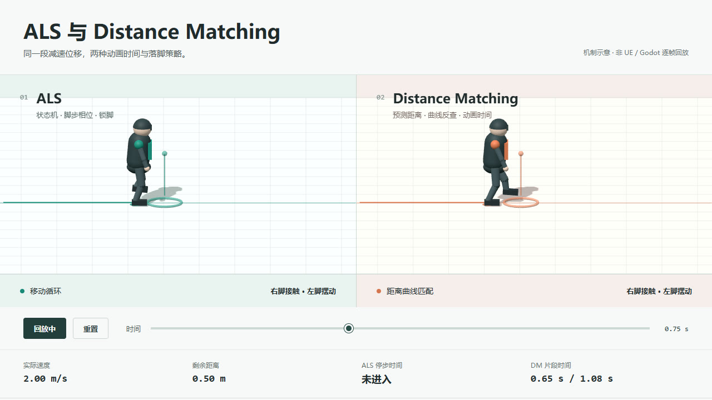

Three.js关卡气氛光照设计
红布从教学楼屋檐垂下，白色顶灯退暗，窗边的红光接管走廊。切换室内外视角、拖动展开进度，比较同一空间的两种布光。
打开作品 →

NPR二次元渲染教学对照
二分、法线、局部阈值、面部控制与条带高光。六组案例、常见算法、公开资料及 Godot 迁移边界。
打开实验室 →
ALS V4LyraThree.js
锁脚、原地转向、攀爬、交叉步与道具动画切换。可调条件、拖动时间轴，观察两套机制及公开资料的边界。
打开演示 →

Godot 4.7Unreal 5.xThree.js
切换 Godot 与 Unreal 工作流，逐步观察骨架映射、Rest 姿态和 IK 校正；可对比 17→17 与 17→18 拓扑，并直接调节参数。
打开演示 →

ALSDistance MatchingThree.js
调整初速度与制动强度，观察两种停步方案的动画相位、距离曲线与脚部接触。
打开演示 →